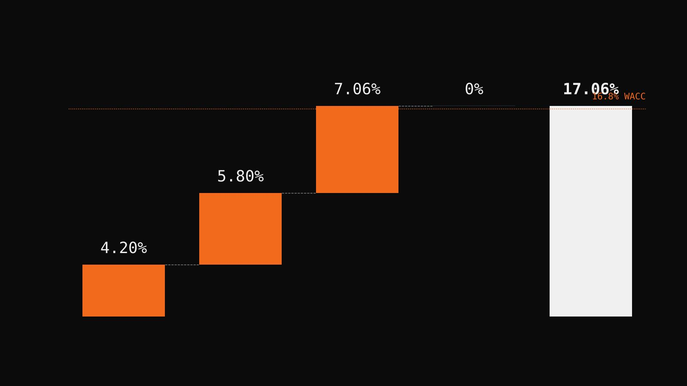
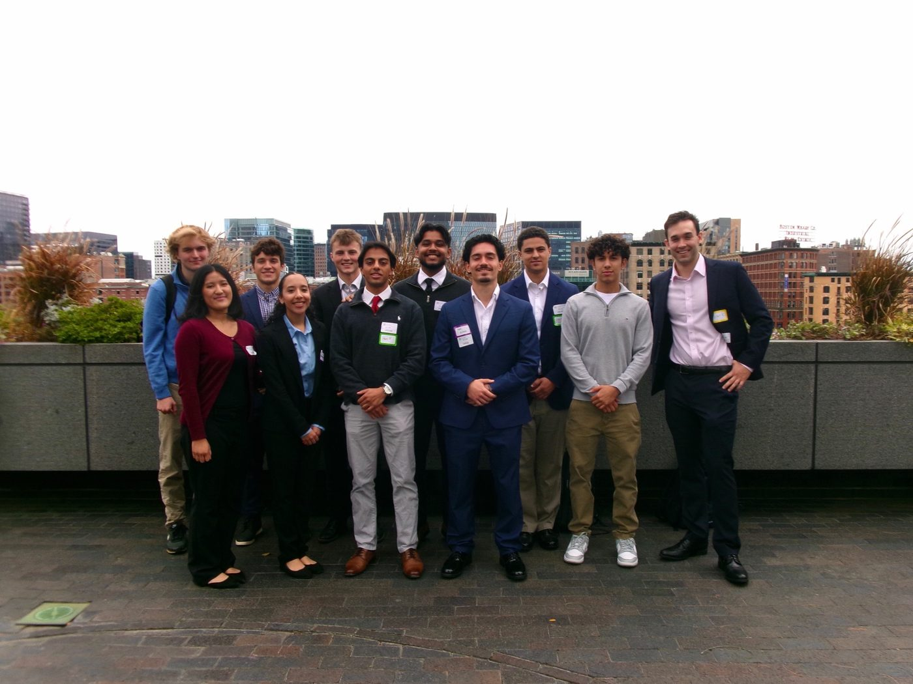
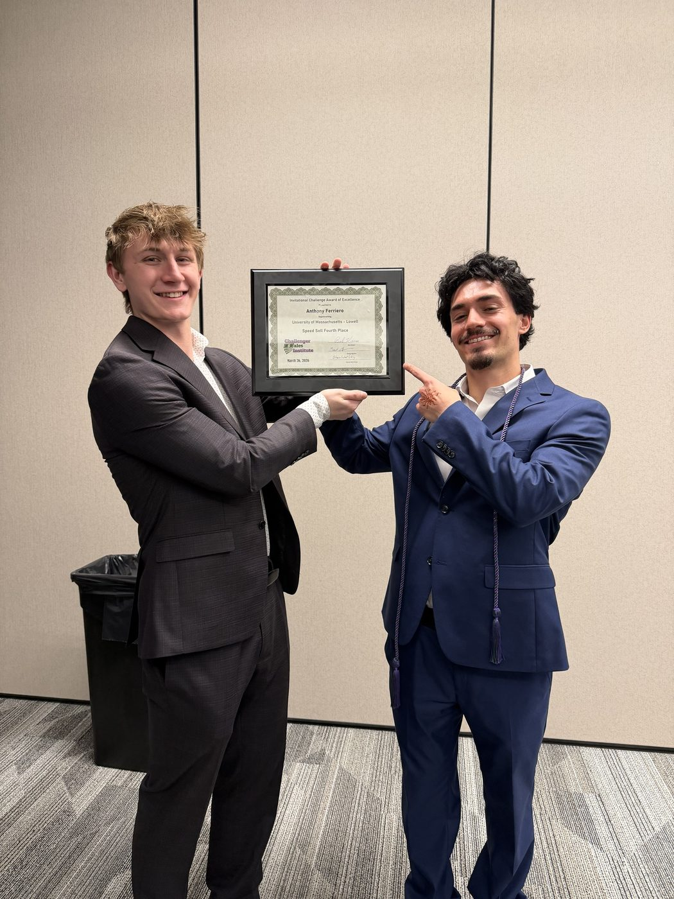
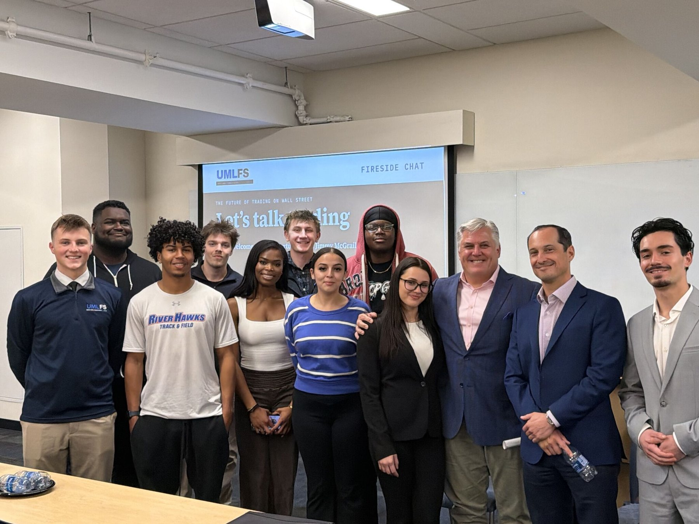

Anthony Ferriero.
Fixed income. Credit research, syndicate and debt capital markets.
Nine months covering the primary bond market at Finsight. UMass Lowell, class of 2027.
About me
I'm studying finance and marketing at UMass Lowell, with a minor in quantitative economics. I originally came to college focused on marketing because I've always been passionate about sports. But by the end of my sophomore year, I wanted to challenge myself with something more quantitative, so I added finance. The more I learned, the more it clicked.
That interest eventually led me to Finsight, a platform that tracks new bond deals. I worked with more than 30 syndicate desks, following order books across 15 to 20 deals a day. One example was Alphabet's $25 billion bond offering across ten tranches. A big part of the job was building relationships with bankers and getting information from people who weren't obligated to help me. I had to earn their trust and show them I could add value.
Since then, I've continued building on that experience. I train students on the Bloomberg Terminal, research green bond pricing, and build my own market tools. Outside the classroom, I'm president of the Finance Society and captain of the sales team.
I'm looking to build a career in fixed income, particularly in credit research, syndicate, or debt capital markets. I enjoy understanding what's happening in the market, following the details behind a deal, and seeing how the different pieces come together. I want to keep learning, contribute to a team, and become someone people can count on to know the details and get the numbers right the first time.
Work
- Media DCF models and credit compsFive media companies on one template, compared as credits.
 6.6xSkydance net leverageOpen
6.6xSkydance net leverageOpen - Green bond pricingDo green bonds price tighter at issue? 153 matched pairs.
 2.4 bpsaverage gap, not significantOpen
2.4 bpsaverage gap, not significantOpen - Tender TrackerA daily tracker of bond tender and exchange offers.
 9 in 10types and dates right on unseen filingsOpen
9 in 10types and dates right on unseen filingsOpen - Morning Market DashboardIs the new issue window open? One score, every morning.
 7 inputsfrom VIX to the 10 yearOpen
7 inputsfrom VIX to the 10 yearOpen - Credit Research ToolkitSpreads an issuer from SEC filings and flags what changed.
 $159.6bnAT&T debt, matched to its releaseOpen
$159.6bnAT&T debt, matched to its releaseOpen - 2026 Valuation ChallengeDiscount rate, DCF and LBO for an ESOP sale.

16.8%cost of capital I builtOpen
One body of work, four desks
- Fixed income
- Green bond pricing · Commonwealth Capital Research
- Credit research
- Media DCF models and credit comps · Credit Research Toolkit
- Syndicate
- Finsight · Morning Market Dashboard
- Debt capital markets
- Finsight · Tender Tracker
Recent events
 On stage at the NYSE after the ICE Fixed Income Forum, October 21, 2026.
On stage at the NYSE after the ICE Fixed Income Forum, October 21, 2026.
The Finance Society on the roof of the Boston Fed, Boston Fintech Week.
Fourth in Speed Sell at the Challenger Sales Institute invitational. With Nick Elward of Natixis after the CCR fireside chat.
With Nick Elward of Natixis after the CCR fireside chat.
After our fireside chat, The Future of Trading on Wall Street, November 19.